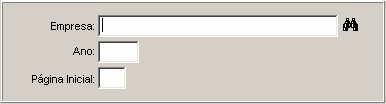

Balanço Patrimonial
Previous
Top
Next
Finalidade :
-
Estabelecer um controle contábil através do balanço patrimonial.
Síntese :
- Destina-se a organização e controle do patrimônio, através de balanços periódicos.
Pré-Requisitos :
-
Unidade Empresarial ( parceiro )
-
Plano de Conta Empresa
-
Lançamento Contábil
Pós-Requisitos :
-
Telas:
-
Botões
Descrição dos Campos
[

Empresa
Ano
Determine a empresa para o balanço
Determine o ano em vigência
Página Inicial
Determine uma página inicial para o livro de balanço.